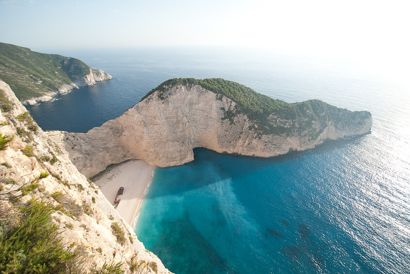

Грузия, Сванетия
Историческая горная область на северо-западе Грузии. Сванетия разделена на Верхнюю и Нижнюю, имеет собственный язык, отличный от литературного грузинского. Народность, населяющая регион, — сваны. Поселения Верхней Сванетии располагаются на высоте от 1500 до 2000 м. Столица региона Местия, расположенная на высоте 1500 м, вошла в число 32 примечательных туристических деревень мира, по версии ООН. Община Ушгули на высоте 2200 м — на втором месте среди самых высокогорных поселений Европы после дагестанского села Куруш.
Изолированность региона способствовала сохранению общинного строя, древних традиций, отсутствию ярких атрибутов цивилизации, таких как железные дороги, чрезмерное количество автомобилей и современная архитектура. Сванетию иногда называют медвежьим углом — её жители зачастую не в курсе основных глобальных событий, не имеют связи с остальной Грузией. В общине Ушгули время будто остановилось в позднем Средневековье. Въезд в поселение охраняют сванские башни — объект всемирного наследия ЮНЕСКО, жители обитают в каменных домах, а по грунтовым дорогам разгуливают коровы. Аналогичные башни-дома построены в Местии. В городе есть этнографический музей, рассказывающий о многообразной сванской культуре, земледелии и религии. Для пешего туризма широкий выбор маршрутов: к смотровым площадкам гор Ушба (4690 м) и Шхара (5193 м), горному озеру Корулди и альпийским лугам. Путешествие в Сванетию позволит абстрагироваться от забот и перезагрузиться.
Норвегия
Норвегия, или Страна фьордов, — сокровищница природных богатств и неповторимых нордических пейзажей, образец бережного отношения к экологии, страна уникальной культуры и мифологии. Климат здесь суровый и непредсказуемый. Практически постоянно на территории всех 11 фюльке (областей) пронизывающие ветра, пасмурная погода, а на севере — холодные зимы. Лето — короткий период, когда в страну можно приехать без чемоданов с тёплыми вещами, поймать максимум солнечных дней, устраивать пикники на природе, ночевать в палатке и кататься на велосипеде по горным тропам.
Основная цель туристов в Норвегии — фьорды. Эти живописные узкие заливы, врезающиеся в сушу по всему побережью на расстояние до 200 км, окружены скалами причудливой формы и зелёными долинами. Столицей фьордов называют город Берген — отсюда начинаются базовые маршруты круизных лайнеров, доставляющие туристов к природным красотам. Ради живописного фото поднимитесь на Язык Тролля — выпирающую скалу над озером Разенган. Насытившиеся фьордами туристы посещают Лофотенские острова у северо-западного побережья страны. Чтобы сэкономить на жилье, можно проживать в палатках на территории охраняемых кемпингов. Не менее интересен Осло — здесь можно посетить музей художника Эдварда Мунка, свободно зайти в ратушу, где вручают Нобелевскую премию мира, или погулять по кварталам современного района Акер-Брюгге.

ДЛучшее время для поездки: с июня по август — воздух прогревается до 25 °С, выпадает минимум осадков и больше всего солнечных дней.
Греция
Одна из колыбелей мировой цивилизации, солнечная Греция привлекает туристов разнообразием курортов, чистейшей бирюзовой водой Эгейского моря, развитой инфраструктурой и качественным сервисом. Греческая средиземноморская кухня — одна из самых полезных для здоровья. В стране сосредоточены важнейшие античные памятники. Отели на любой вкус и кошелёк позволяют комфортно отдыхать туристам с любым бюджетом.
Каждый курорт Греции уникален своими жемчужинами. Остров Крит знаменит Кносским дворцом — памятником минойской цивилизации, пещерой Зевса и бывшим венецианским городом Ханья. Вулканический остров Санторини привлекает городом, построенным из лавового камня, и кратером подводного вулкана в гавани, остров Корфу — уютными бухтами, Тасос — тихими хвойными лесами.